03
Bài tập 3
1. Phân tích tác vụ học tập
Ba tác vụ học tập được lựa chọn là những tình huống phổ biến khi sinh viên sử dụng công cụ AI trong quá trình học tập. Mỗi tác vụ có mục tiêu, yêu cầu đầu ra và mức độ phức tạp khác nhau, vì vậy cách viết prompt cũng cần được điều chỉnh phù hợp.
| Tác vụ | Mục tiêu | Thách thức | Yêu cầu đối với prompt |
|---|---|---|---|
| Tóm tắt tài liệu học thuật | Rút gọn nội dung dài thành các ý chính dễ hiểu. | Dễ bỏ sót ý quan trọng hoặc tóm tắt quá chung chung. | Cần nêu rõ độ dài, đối tượng đọc, cấu trúc và mức độ chi tiết. |
| Giải thích khái niệm phức tạp | Biến một khái niệm khó thành phần giải thích dễ tiếp cận. | Nếu prompt mơ hồ, AI có thể giải thích quá hàn lâm hoặc quá ngắn. | Cần yêu cầu ví dụ, so sánh, trình tự giải thích và kiểm tra hiểu biết. |
| Tạo câu hỏi ôn tập | Tạo bộ câu hỏi giúp người học tự kiểm tra kiến thức. | Câu hỏi có thể bị lệch trọng tâm, quá dễ hoặc thiếu đáp án. | Cần quy định số lượng câu hỏi, dạng câu hỏi, mức độ khó và đáp án kèm giải thích. |
Thử nghiệm và đánh giá hiệu quả của Prompt Engineering
Bài tập này tập trung vào việc phát triển kỹ năng viết prompt hiệu quả để tận dụng tốt hơn khả năng của mô hình ngôn ngữ lớn trong học tập. Nội dung chính của bài là xây dựng nhiều phiên bản prompt cho cùng một tác vụ, sau đó thử nghiệm, so sánh và rút ra nguyên tắc viết prompt hiệu quả.
Ảnh/tài liệu đầu vào dùng để hỏi AI cho tác vụ 1
Ảnh được sử dụng làm dữ liệu đầu vào để thử nghiệm các phiên bản prompt.
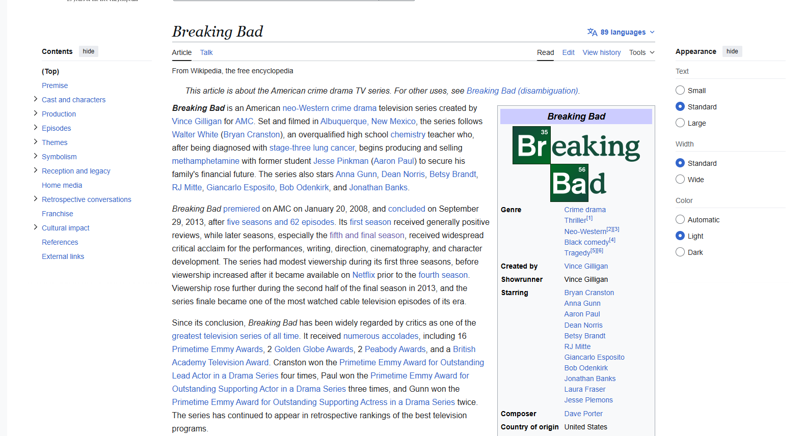
2. Thử nghiệm các phiên bản prompt
Với mỗi tác vụ, nhóm xây dựng ba phiên bản prompt: prompt cơ bản, prompt cải tiến và prompt nâng cao. Ba phiên bản này được dùng để thử nghiệm trên công cụ AI, sau đó so sánh chất lượng đầu ra.
Tác vụ 1: Tóm tắt một bài đọc hoặc tài liệu học thuật
Prompt cơ bản:
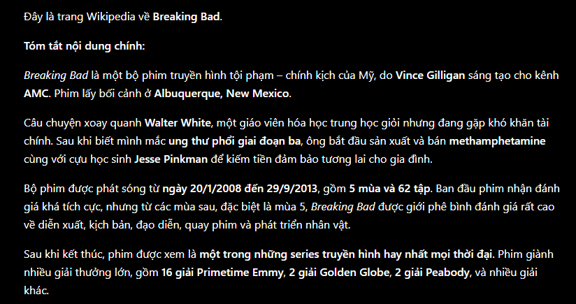
Prompt cải tiến:
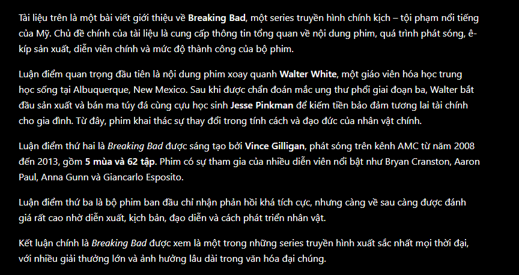
Prompt nâng cao:
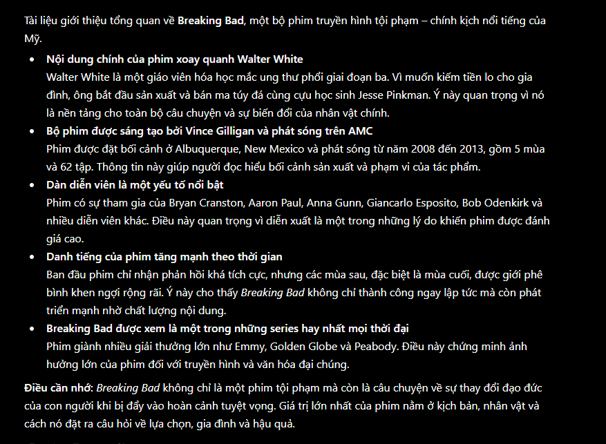
Tác vụ 2: Giải thích một khái niệm phức tạp
Prompt cơ bản:
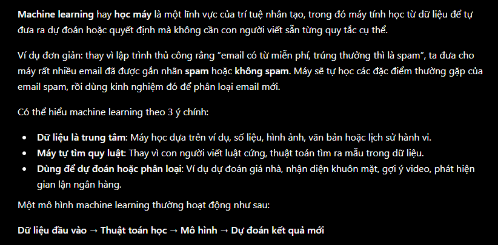
Prompt cải tiến:
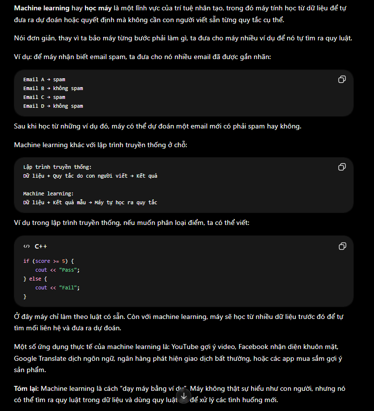
Prompt nâng cao:
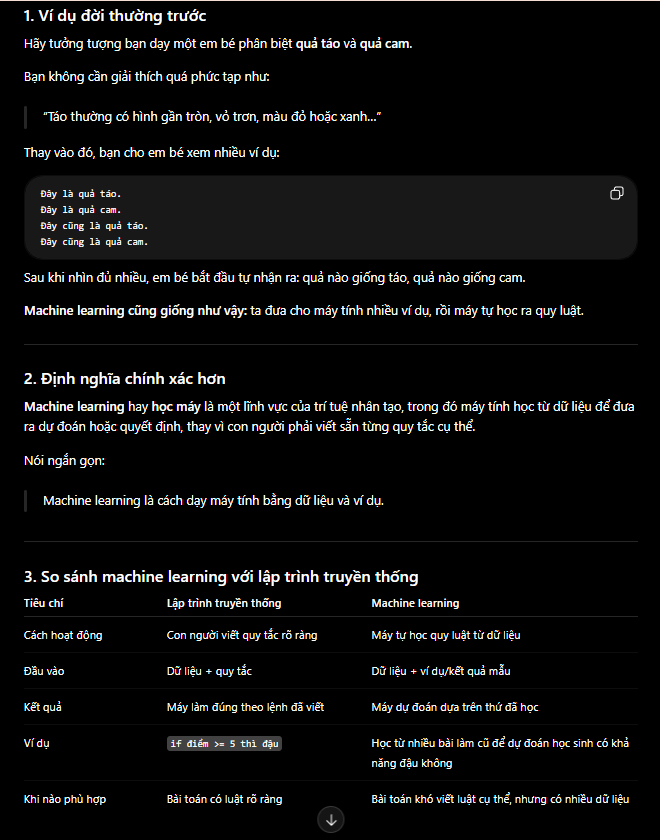
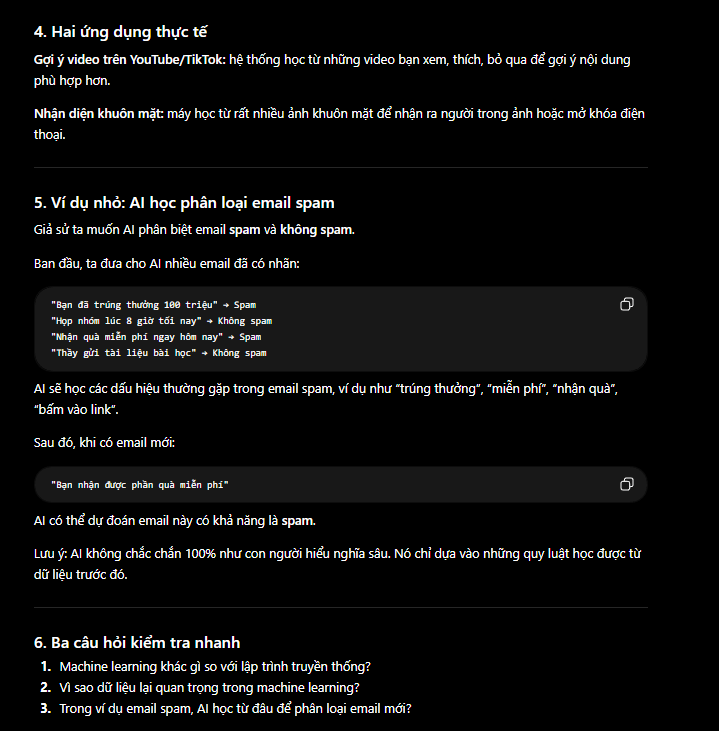
Tác vụ 3: Tạo bộ câu hỏi ôn tập cho một chủ đề
Prompt cơ bản:
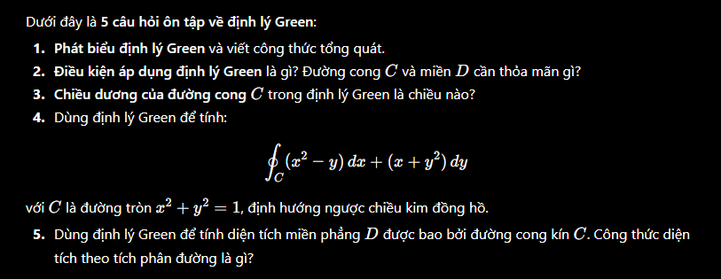
Prompt cải tiến:
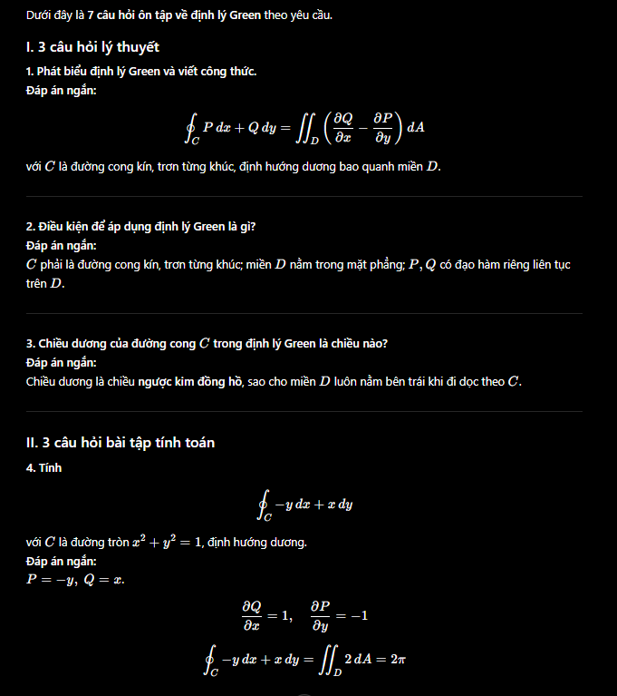
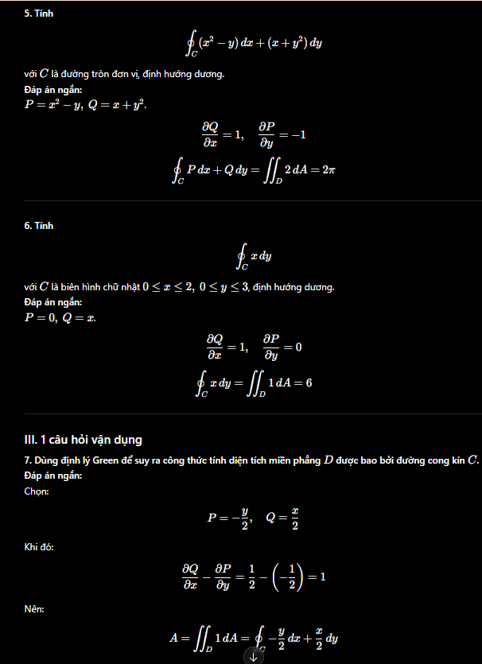
Prompt nâng cao:
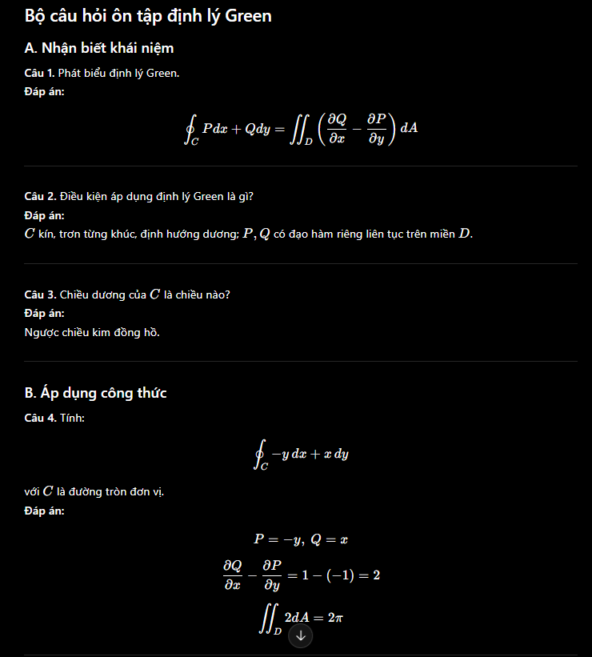
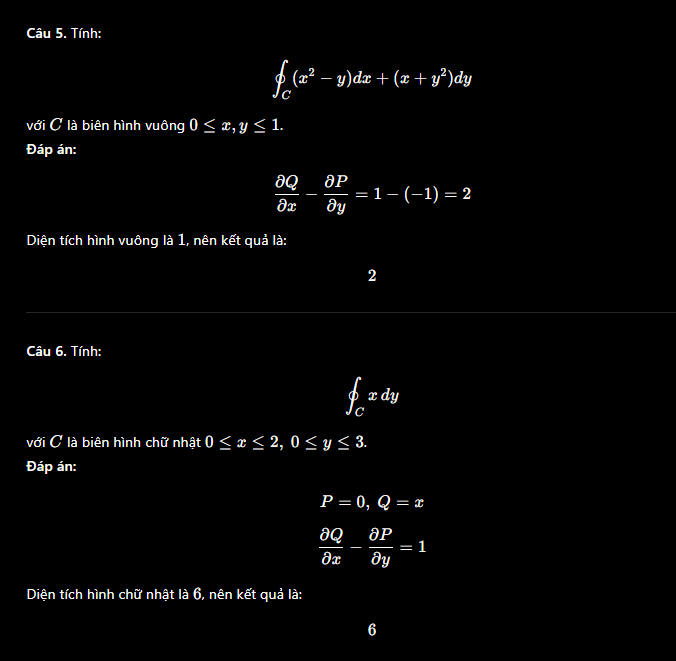
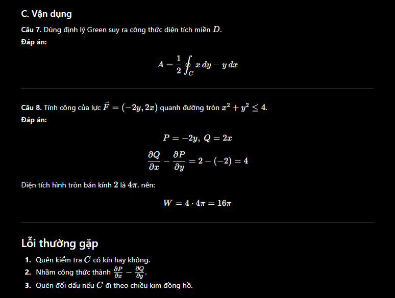
3. So sánh kết quả thử nghiệm
Sau khi thử nghiệm, kết quả cho thấy prompt càng rõ ràng thì câu trả lời càng có cấu trúc, đúng trọng tâm và dễ sử dụng hơn. Prompt cơ bản thường cho kết quả ngắn và chung chung. Prompt cải tiến giúp AI hiểu rõ yêu cầu hơn. Prompt nâng cao cho kết quả tốt nhất vì có vai trò, ngữ cảnh, cấu trúc đầu ra và tiêu chí đánh giá cụ thể.
| Loại prompt | Đặc điểm | Ưu điểm | Hạn chế | Chất lượng kết quả |
|---|---|---|---|---|
| Cơ bản | Ngắn, chỉ nêu yêu cầu chính. | Nhanh, dễ viết, phù hợp với yêu cầu đơn giản. | Đầu ra dễ chung chung, thiếu cấu trúc, thiếu chiều sâu. | Trung bình |
| Cải tiến | Có thêm độ dài, cấu trúc, đối tượng đọc hoặc yêu cầu cụ thể. | Kết quả rõ ràng hơn, dễ theo dõi hơn. | Vẫn có thể thiếu ví dụ hoặc phân tích sâu nếu chưa yêu cầu. | Tốt |
| Nâng cao | Có role prompting, ngữ cảnh, tiêu chí, cấu trúc và yêu cầu đầu ra chi tiết. | Kết quả đầy đủ, đúng mục tiêu, có khả năng dùng trực tiếp cho học tập. | Tốn thời gian viết prompt hơn. | Rất tốt |
4. Đánh giá hiệu quả prompt
Qua thử nghiệm, có thể thấy prompt nâng cao thường hiệu quả hơn vì nó không chỉ đưa ra yêu cầu, mà còn định hướng cách AI suy nghĩ và trình bày câu trả lời. Khi prompt có vai trò cụ thể, AI sẽ điều chỉnh giọng văn và mức độ giải thích phù hợp hơn với người học.
Prompt cải tiến cũng cho kết quả tốt hơn prompt cơ bản vì nó cung cấp thêm tiêu chí về độ dài, cấu trúc và nội dung cần có. Điều này giúp câu trả lời ít bị lan man và dễ đánh giá hơn. Ngược lại, prompt cơ bản tuy nhanh nhưng thường khiến AI phải tự đoán mong muốn của người dùng, dẫn đến kết quả không ổn định.
Nhìn chung, hiệu quả của prompt phụ thuộc vào mức độ rõ ràng của mục tiêu, bối cảnh, đối tượng người đọc và định dạng đầu ra. Một prompt tốt không nhất thiết phải dài, nhưng cần đủ thông tin để AI hiểu chính xác nhiệm vụ.
5. Nguyên tắc và mẹo viết prompt hiệu quả
- Nêu rõ vai trò của AI: Ví dụ “Bạn là giảng viên”, “Bạn là trợ giảng”, “Bạn là chuyên gia”.
- Cung cấp bối cảnh: Cho biết người đọc là ai, đang học ở trình độ nào và cần kết quả để làm gì.
- Chỉ định cấu trúc đầu ra: Yêu cầu bảng, bullet points, các bước, phần tổng kết hoặc ví dụ.
- Đưa tiêu chí đánh giá: Ví dụ cần dễ hiểu, ngắn gọn, có ví dụ, có đáp án, tránh thuật ngữ khó.
- Chia nhỏ nhiệm vụ: Với tác vụ phức tạp, nên chia thành nhiều phần thay vì hỏi một câu quá chung.
- Yêu cầu ví dụ minh họa: Ví dụ giúp kết quả dễ hiểu và có tính ứng dụng hơn.
- Kiểm soát độ dài: Nên nói rõ muốn câu trả lời ngắn, trung bình hay chi tiết.
6. Kết luận
Bài thử nghiệm cho thấy việc viết prompt có ảnh hưởng trực tiếp đến chất lượng câu trả lời của mô hình AI. Prompt càng rõ ràng, có cấu trúc và có bối cảnh thì kết quả càng chính xác, dễ hiểu và phù hợp với mục tiêu học tập.
Ba mức prompt cơ bản, cải tiến và nâng cao thể hiện sự khác biệt rõ rệt. Prompt cơ bản phù hợp khi cần câu trả lời nhanh. Prompt cải tiến phù hợp cho học tập thường ngày. Prompt nâng cao phù hợp khi cần kết quả có chất lượng cao, có thể dùng cho báo cáo, ôn tập hoặc nghiên cứu.